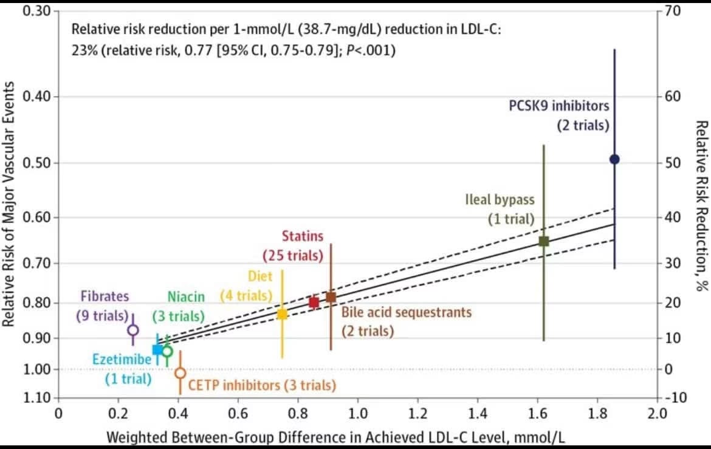

PCSK9 inhibitors are a newer class of cholesterol-lowering drugs that act on a protein called PCSK9, which normally helps break down the liver's LDL receptors (the "docking stations" that pull LDL cholesterol out of the blood). Blocking PCSK9 leaves more receptors working, so LDL-C (the cholesterol carried in LDL particles) falls sharply. The best-known versions are injectable antibodies: Repatha (evolocumab) and Praluent (alirocumab). Inclisiran is a related injection, described in a shared 2025 ESC/EAS summary as an siRNA given twice a year to help with long-term adherence.1 Oral PCSK9-targeting pills are now reaching the market.8
The group's central message is that PCSK9 drugs are powerful and proven, but proven as an add-on to statins. Louis Nervegna stresses that Repatha and Praluent have only been rigorously shown to lower heart attacks and strokes when combined with statins, and that claims they should replace statins are not supported by outcome data.4 Guidelines keep statins first and add PCSK9 inhibitors when a powerful second drug is needed, with PCSK9 drugs alone recognised as an option mainly for people who cannot take statins.412
This article summarises what the group has shared on how these drugs work, the major trials, plaque imaging studies, the oral newcomers, safety questions, and what admins suggest discussing with a doctor. It reflects group discussion and is not personal medical advice.
How much do PCSK9 drugs lower LDL, and where do they fit?
A 2025 ESC/EAS guideline update, shared as a graphic by Louis, describes ezetimibe as the first-line oral add-on (about 20% LDL-C reduction), bempedoic acid as an oral option for statin intolerance (about 23% alone, about 38% with ezetimibe), PCSK9 antibodies as high-efficacy injectables (about 50-60%) for very-high-risk patients, and inclisiran as a twice-yearly injection. The summary calls it a stepwise approach from oral combinations to injectables.1 A July 2025 review summarised by Gokhan Can says PCSK9 inhibitors add 59-62% LDL-C reduction on top of statins.2
Guideline targets shared in the group give context for when this is considered.
- A 2023 JAHA review summarised by Gokhan suggests a goal below 70 mg/dL for high-risk patients and below 55 mg/dL for very-high-risk patients (below 40 mg/dL after recurrent events on statins). It suggests considering ezetimibe and/or a PCSK9 inhibitor in very-high-risk patients who do not reach goal on maximally tolerated statins.12
- The 2025 ACC/AHA acute coronary syndrome guideline, as summarised by Louis, recommends a non-statin agent (ezetimibe, evolocumab, alirocumab, inclisiran or bempedoic acid) for people on maximally tolerated statins whose LDL is 70 mg/dL or higher, and calls further intensification reasonable at 55 to under 70 mg/dL.13
- Louis lists the main alternatives for people who cannot tolerate statins as ezetimibe, bempedoic acid, inclisiran, Repatha and Praluent.14
Treatment gaps are large: the July 2025 review summarised by Gokhan says fewer than one in four high-risk ASCVD patients reach the below-55 mg/dL target.2
What the outcome trials show
FOURIER and the "how low" question
FOURIER tested evolocumab added to statins. The 2025 review summarised by Gokhan reports a 15% reduction in primary cardiovascular endpoints at a median LDL-C of 30 mg/dL, and cites a major meta-analysis finding a 21% relative risk reduction per 38.7 mg/dL (1 mmol/L) LDL drop with benefit extending down to levels as low as 21 mg/dL.2 The same post says genetic studies link certain PCSK9 mutations to an 88% reduction in coronary heart disease.2
A Circulation analysis of 5,200+ FOURIER patients with prior ischemic stroke, shared by Gokhan, found that people reaching LDL-C below 40 mg/dL had about 31% fewer major cardiovascular events and 27% fewer recurrent strokes than those at 70 mg/dL or higher, with no excess hemorrhagic stroke even below 20 mg/dL.15 This is an analysis by achieved LDL level, not a randomization to different targets, so it is subject to the usual caveats of such comparisons.
VESALIUS-CV: first events in high-risk primary prevention
VESALIUS-CV (NEJM, 2025) enrolled over 12,000 people (median age 66) who had not had a heart attack or stroke but had established atherosclerosis or high-risk diabetes and an LDL-C of at least 90 mg/dL despite other lipid therapy. Adding evolocumab cut the three-point MACE composite (coronary heart disease death, heart attack or ischemic stroke) by 25% over a median of about 4.5 years. LDL-C fell by nearly 55% to a median 45 mg/dL, against 109 mg/dL in controls.3 A linked summary reports a hazard ratio of 0.75 (95% CI 0.65-0.86), with participants on high-intensity statin therapy in the background.3
ODYSSEY OUTCOMES and the mechanism-independent picture
ODYSSEY OUTCOMES (alirocumab) is named alongside FOURIER and VESALIUS-CV as a landmark trial of PCSK9 inhibitors added to statin therapy, and Louis notes that in FOURIER and ODYSSEY OUTCOMES LDL-C fell below 15-20 mg/dL without impairing steroid hormone production or vitamin D.416
Louis shares a chart from Dr. Daniel Chong combining many LDL-lowering trials. Risk reduction tracked the absolute LDL drop regardless of method; the two PCSK9 inhibitor trials lowered LDL by about 1.9 mmol/L (76 mg/dL) with over 50% lower risk versus placebo in that chart.17 Mendelian randomization data on lifelong LDL variants (including PCSK9) show the same proportional pattern; a 90% lifetime relative reduction from a PCSK9 loss-of-function variant would, by Louis's arithmetic, take a 20% lifetime heart-attack risk to about 2%.18

Not every LDL-lowering method works. Louis points out that niacin added to high-dose statins and the CETP inhibitors torcetrapib and dalcetrapib lowered LDL but did not reduce major events, which is why outcome trials matter.19
What imaging trials show about plaque
GLAGOV and other trials on top of statins
Gokhan's summary of IVUS trials describes GLAGOV (2016, 968 patients): evolocumab on top of statins reduced percent atheroma volume (PAV) by 0.95% versus a 0.05% increase with statin alone (p<0.001), and total atheroma volume fell 2.9% versus 0.4% over 76 weeks. The ODYSSEY J-IVUS trial (alirocumab, 36 weeks) showed a slight, non-significant reduction.2021 Louis lists GLAGOV, FOURIER and the later YELLOW-III among trials showing plaque reversal.22 Another Gokhan post describes PACMAN-AMI, in which alirocumab produced "triple regression" (less plaque volume, a smaller lipid core and thicker fibrous caps).23
YELLOW-III: six months, statin plus evolocumab
YELLOW-III (JACC Cardiovascular Imaging, 2026) gave 137 patients with chronic coronary disease maximum-dose statins for at least four weeks, then evolocumab 140 mg every two weeks for 26 weeks, with imaging before and after.6 Louis reports these findings.
- Fibrous cap thickness (OCT) rose by over 30%.6
- Percent atheroma volume (IVUS) fell by 1.38 absolute points, driven mainly by shrinkage of the soft lipid core.6
- On his chart, total atheroma volume went from 137.2 to about 131 mm3 (-4.4%) at an average LDL of 39.1 mg/dL.7
- The "melting butter" label refers to the lipid-core shrinkage on near-infrared imaging.24
Louis notes this is a smaller reversal than some older statin trials, but in only six months, alongside plaque stabilisation.7 An earlier YELLOW study reported that intensive rosuvastatin reduced lipid-core burden within 7-8 weeks.25
Evolocumab alone: a small uncontrolled study
A 47-patient imaging study (JACC: Cardiovascular Imaging, 2025; Matthew Budoff among the investigators) followed people on evolocumab for about 18 months, with average LDL near 30 mg/dL. Non-calcified plaque fell from 607.3 to 562.1 microlitres and low-attenuation plaque from 37.1 to 20.4, while total plaque volume was unchanged (716.2 to 710.8) because calcified plaque rose. 37 of 47 participants had some soft-plaque regression.26 Louis says that the study had no randomization or control group, and that while PCSK9 inhibitors likely reverse plaque as monotherapy, rigorous proof of fewer heart attacks as monotherapy is still missing.27 He also compared it with the KETO-CTA study in a post that cautions about comparing different cohorts.28

Calcium and the "statin paradox"
Gokhan argues that statins reduce events and plaque burden but accelerate coronary calcification as soft plaque densifies, whereas PCSK9 inhibitors regress plaque with less of a calcific surge. His evidence includes GLAGOV (no significant rise in dense calcium), PACMAN-AMI, and a 2022 randomized trial of 61 people in which alirocumab 75 mg every two weeks added to statins gave median CAC +2.9% versus +10.6% on statins alone over 18 months.232930 A retrospective study (Ikegami, n=120) found annual CAC progression of about 14.3% versus 29.7%.29 Gokhan notes studies are small and larger trials are needed.30
Show data
| PCSK9 inhibitor | Statin alone | |
|---|---|---|
| Randomized trial, alirocumab added to statins (61 people, 18 months) | 2.9% | 10.6% |
| Retrospective study, Ikegami (120 people, per year) | 14.3% | 29.7% |
Louis cautions that whether this is an advantage over statins is still debated, since stabilisation by calcification is thought to be part of how statins lower risk.31
Oral PCSK9 pills and gene editing
- Lipfendra (Merck): Gokhan reports FDA approval (July 2026) of a once-daily oral PCSK9 inhibitor that lowered LDL 56-60% in phase 3 trials.8
- Enlicitide: a phase 3 trial in 303 adults with heterozygous familial hypercholesterolemia on statins found LDL down 58.2% at 24 weeks (versus +2.6% on placebo) and 55.3% at 52 weeks (versus +8.7%), with safety broadly similar to placebo. The post notes that larger, longer outcome trials are still needed.9
- AZD0780: a phase 1 trial of 35 people at EAS 2024 cut LDL by at least 30%, with a subanalysis suggesting 78% alongside rosuvastatin; specialists questioned the early data.32
- Gene editing: Louis warns that experimental PCSK9 gene therapies are not proven safe, noting patient deaths in a trial and adding that this was specific to the gene therapy and not seen in long PCSK9 inhibitor trials.33
- Berberine: Louis notes berberine inhibits PCSK9 and modestly lowers LDL, far less than the drugs, and suggests it only for low-risk primary prevention.34
Nuances, controversies and common misconceptions
Monotherapy outcome evidence is missing
Louis's central caution is that no randomized outcome trial has shown that PCSK9 inhibitors alone reduce heart attacks, strokes or cardiovascular mortality. The landmark trials (FOURIER, VESALIUS-CV, ODYSSEY OUTCOMES) had virtually all participants on statins, while monotherapy trials in statin-intolerant people (GAUSS for evolocumab, ODYSSEY ALTERNATIVE for alirocumab) measured LDL and tolerability, not events.4 He adds that guidelines recommend monotherapy mainly as backup when first-line therapy fails or is not tolerated.5
Lp(a): lowering the number may not be the goal
PCSK9 inhibitors lower lipoprotein(a) (Lp(a), a genetically set LDL-like particle) by about 27% on average per a meta-analysis cited by Louis.35 Louis argues the HORIZON trial, which lowered Lp(a) massively without reducing MACE, means people taking a PCSK9 drug mainly for Lp(a) should revisit that choice, since statins or statins plus PCSK9 inhibitors have outcome evidence in people with high Lp(a).5 Expert Sam Tsimikas, quoted by Louis, reads Lp(a)HORIZON differently: Lp(a) risk may be managed with LDL-C at or below 65, blood pressure at or below 120 and proven medicines, and in his clinic about 75% of patients take a statin, 50% ezetimibe and 50% a PCSK9 inhibitor.36
Side effects and the track record
Louis rejects the claim that PCSK9 inhibitors lack significant side effects. The manufacturer lists flu-like symptoms, back pain and high blood sugar among the most common, and long-term effects are less known than for statins, which he says is why guidance reserves them for high-risk or statin-intolerant patients.10 He personally takes a low-dose statin because statin side effects are known after decades, while newer drugs may have undiscovered ones; he labels this his own rationale.11 Gokhan describes feeling good after switching from ezetimibe to Repatha alongside pitavastatin, but presents this as personal experience.37 He also says that on rosuvastatin plus ezetimibe his LDL was not very different from low-dose rosuvastatin alone and that he was exploring a PCSK9 inhibitor.38
Very low LDL, brain and hormones
- Louis says PCSK9 inhibitors lower cholesterol only in the circulation, not the brain, because the brain makes its own cholesterol and blood cholesterol cannot cross the blood-brain barrier.3940
- He also says tissues, including the adrenals and gonads, need only tens of milligrams of cholesterol per day from blood, and that trials reaching LDL-C below 15-20 mg/dL did not impair hormone production or vitamin D.16
- The July 2025 review summarised by Gokhan reports that cognitive decline (evaluated in EBBINGHAUS) and hemorrhagic stroke (number needed to harm 3,333) concerns are not supported by large-scale data.2
Diabetes and inflammation
A review shared by Gokhan lists PCSK9 inhibitors alongside ezetimibe and pitavastatin as ways to lower LDL while limiting glycemic harm compared with statins.41 On inflammation, a shared meta-analysis found that PCSK9 inhibitors did not lower hsCRP: its illustration shows a slight rise of about 6%, against falls of 17.3% for statins and 3.2% for ezetimibe, although Louis's summary of it lists a 6% reduction.42
Aging claims are speculative
Louis shared GeroScience reviews proposing PCSK9 as a regulator of cardiometabolic aging, and suggested that the drugs may be treating aging in the heart and liver. The claim is speculative and an emerging research area.4344
What this means for you
These points reflect the group's discussion; discuss your own situation with your doctor.
- If you are already on a maximally tolerated statin and still above your goal, the guideline summaries shared in the group list PCSK9 antibodies as an option for very-high-risk patients, after oral add-ons such as ezetimibe.11213
- The strongest outcome evidence is for adding PCSK9 inhibitors to statins (FOURIER, ODYSSEY OUTCOMES, VESALIUS-CV).34
- If you cannot take statins, the group lists PCSK9 inhibitors as an alternative, but the admins point out that this rests on LDL-lowering data rather than outcome trials.414
- Louis argues against using a PCSK9 inhibitor as first-line monotherapy for primary prevention, and against taking one mainly to lower Lp(a).5
- In the analyses shared, lower achieved LDL tracked with fewer events, down to the very low levels tested.215
- Oral options and twice-yearly injections may help people who dislike self-injecting or struggle with adherence.19
- Treat gene editing and supplements such as berberine as different categories from approved drugs.3334
Frequently asked questions
Do PCSK9 inhibitors prevent heart attacks?
Yes, when added to statins: VESALIUS-CV showed a 25% reduction in first major events, and FOURIER and ODYSSEY OUTCOMES are cited as outcome trials on statin background.34 As a stand-alone treatment, there is no randomized outcome trial.5
Can PCSK9 inhibitors replace statins?
Louis says influencers have overstated this. The drugs might work better, but there are no outcome data showing it, which is why guidelines keep statins first-line.4
Do they reverse plaque?
On top of statins, yes in imaging trials such as GLAGOV (total atheroma volume -2.9% over 76 weeks) and YELLOW-III (fibrous cap up over 30% and plaque down in 6 months).620 A small uncontrolled 47-patient study showed soft-plaque reduction at LDL near 30 mg/dL.26 Plaque imaging is a surrogate, not a heart-attack outcome.27
Is very low LDL safe?
The July 2025 review summary says concerns such as hemorrhagic stroke, cognitive decline and hormone disruption are not supported by large-scale data, and the FOURIER stroke analysis found no excess hemorrhagic stroke below 20 mg/dL.215 Louis cautions that long-term effects of newer drugs are still less known than for statins.10
What are the new pills?
Lipfendra (FDA-approved July 2026) and enlicitide are oral PCSK9 inhibitors that cut LDL by roughly 56-60% in phase 3 trials, while AZD0780 is at an earlier phase 1 stage. Outcome trials for the pills are still pending.8932